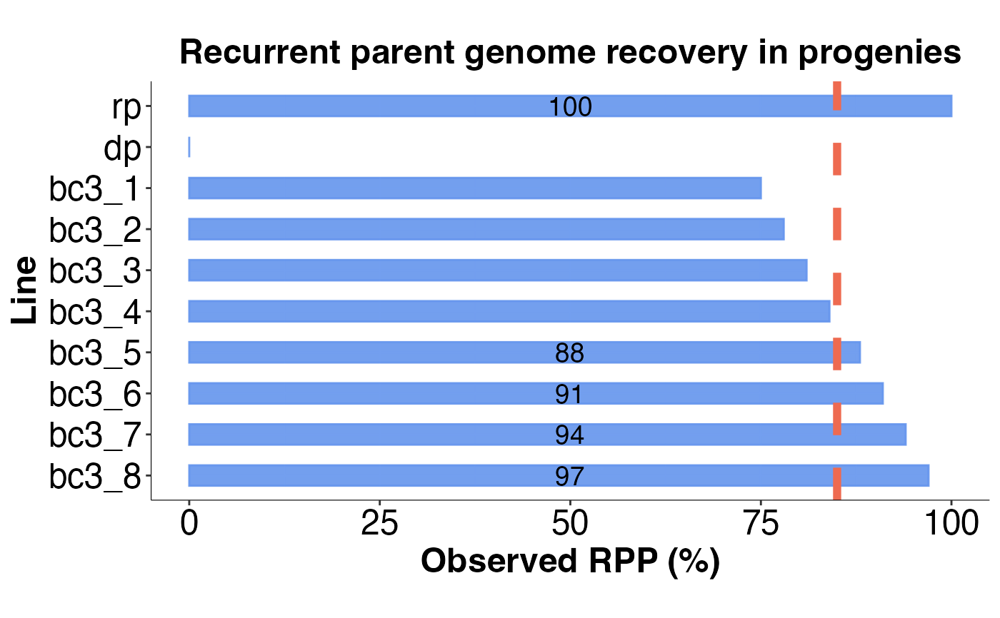

Visualize computed RPP values for BC progenies as a bar plot.
Usage
rpp_barplot(
rpp_df,
rpp_col = "total_rpp",
rpp_sample_id = "sample_id",
bc_gen = NULL,
rpp_threshold = NULL,
thresh_line_col = "coral2",
show_above_thresh = FALSE,
text_size = 15,
text_scale_fct = 0.2,
alpha = 0.5,
bar_width = 0.5,
bar_col = "cornflowerblue",
aspect_ratio = 0.5,
pdf = FALSE,
filename = "rpp_barplot",
width = 8,
height = 6
)Arguments
- rpp_df
A data frame containing the computed RPP values for each BC progeny.
- rpp_col
A character value indicating the column name of RPP values in
rpp_df.- rpp_sample_id
A character value indicating the column name of progeny IDs in
rpp_df.- bc_gen
An integer value indicating the BC generation for the progenies
rpp_df. This value is used to compute the nominal RPP values, ifrpp_threshold`= NULL`.- rpp_threshold
A numeric value between 0 and 1 indicating the RPP threshold for selecting BC progenies.
- thresh_line_col
A character value indicating the color of the threshold line.
- show_above_thresh
A logical value indicating whether to subset
rpp_dfto show only lines that have RPP values greater or equal to the desired RPP threshold. Only the subset lines will be shown on the plot.- text_size
A numeric value for setting text size.
- text_scale_fct
A numeric value for scaling text size. The default value is `20%` of
text_size.- alpha
A numeric value between 0 and 1 for modifying the opacity of colors.
- bar_width
A numeric value for setting the width of plot bars.
- bar_col
A character value for setting the color to fill plot bars.
- aspect_ratio
A numeric value for setting the aspect ratio of the bar plot.
A logical value indicating whether to save plot as a pdf graphic device when TRUE or output plot in R when FALSE.
- filename
A character value for path or file name for saving pdf.
- width
A numeric value for the width of pdf device.
- height
A numeric value for the height of pdf device.
Examples
# \donttest{
# example code
library(panGenomeBreedr)
# Observed RPP values
rpp_df <- data.frame(sample_id = c('rp', 'dp', paste0('bc3_', 1:8)),
rpp = c(1, 0, round(seq(0.75, 0.97, len = 8), 2)))
# Generate bar plot for RPP values
rpp_barplot(rpp_df,
rpp_col = 'rpp',
rpp_threshold = 0.85,
text_size = 18,
text_scale_fct = 0.1,
alpha = 0.9,
bar_width = 0.5,
aspect_ratio = 0.5,
pdf = FALSE)

# }